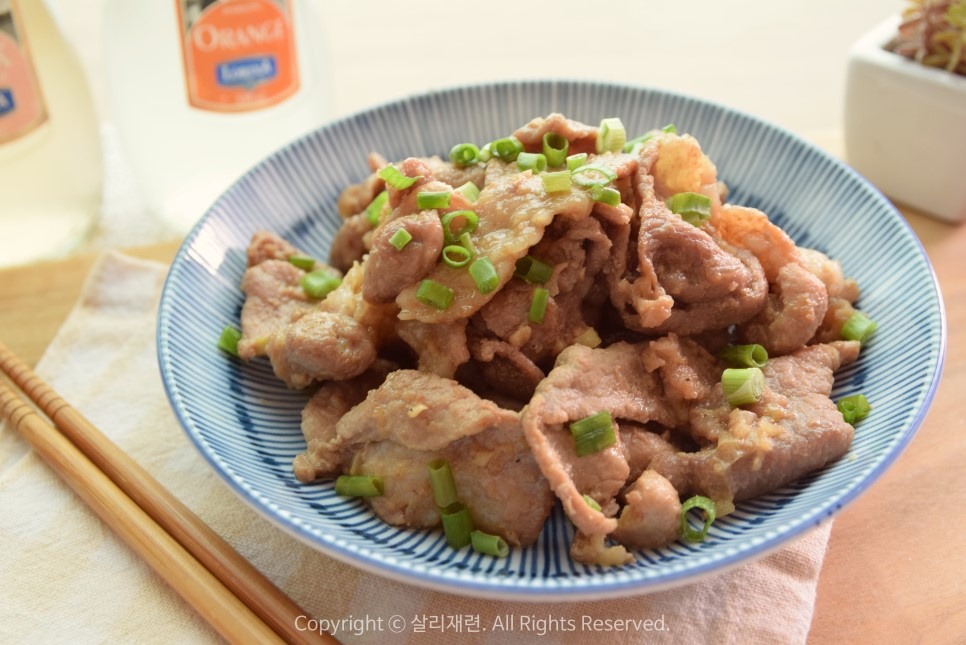

돼지불백

Description
돼지불백
Ingredients
Serves 2(good portions)
- 500g 돼지고기 앞다리살
- 대파 한대
- 1/4 간양파
- 6숟가락 진간장
- 0.5숟가락 피쉬소스
- 1.5숟가락 흑설탕
- 1.5숟가락 물엿
- 생강가루 약간
- 후춧가루 약간
- 3숫가락 맛술
- 1.5숟가락 참기름
Steps
- 키친타올로 돼지고기 핏물을 제거한다.
- 간양파와 설탕을 넣고 버무리고 10분 재운다
- 양념을 만들고 무쳐주고, 2-3시간 재운다
- 팬에 식용유를 두르고 파를 2분가량 볶아준다
- 파의 풍미가 올라오면 중불로 고기를 굽는다 (*고기 굽듯)
back